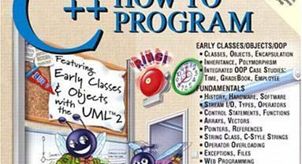
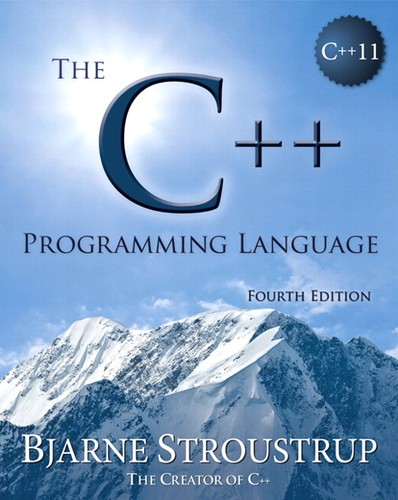
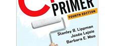
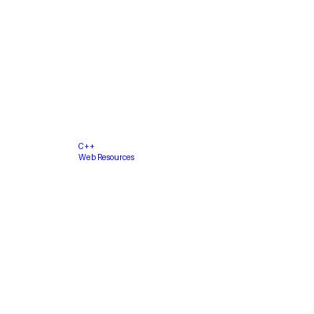

Programmazione Scientifica++: Lezione 1
Docente
Introduzione
- Io sono un fisico computazionale e mi occupo di fisica della materia soffice e biofisica
- Non sono un programmatore né un guru di C++!
- E allora perché insegno questo corso?
- Io utilizzo C++ dal 1999 quando ero dottorando!
- Simulazione di un sistema vetroso molecolare
- Analisi dati
Perché studiare il C++?
- Negli ultimi decenni, il C++ ha sostituito il Fortran come standard.
- Grossi esperimenti (es. al CERN) hanno adottato C++ già nei primi anni 90.
- Molti strumenti di analisi dati e metodi numerici sono scritti in C++.
- Moltissimi package per fare simulazioni usano il C++:
- LAMMPS
- ESPResSo
- HOOMD-blue
Prerequisiti del Corso
- Tutti voi avete già seguito corsi di programmazione di base (in C).
- Sapete perché scriviamo programmi ed applicazioni nei vari campi della Fisica.
- Sapete cosa vuol dire compilare ed eseguire un programma.
- Se siete nuovi alla Programmazione Orientata agli Oggetti (OOP):
- Non preoccupatevi, questo corso vi guiderà passo dopo passo partendo da zero.
Obiettivi Principali del Corso
- Capire l’importanza della programmazione ad oggetti e del C++ moderno.
- Saper scrivere programmi usando classi appropriate per risolvere problemi.
- Capire come usare e integrare librerie esterne (es. Eigen).
- Progetto Finale:
- Sviluppare una vera rete neurale (Multi-Layer Perceptron) in C++.
- Riconoscere numeri scritti a mano dal dataset MNIST.
Esempi di Uso di C++ in Fisica (e non solo)
- ROOT Data Analysis Framework (particelle elementari)
- Simulazioni numeriche di sistemi complessi (LAMMPS, HOOMD)
- Numerical Recipes in C++
- E oggi, l’Intelligenza Artificiale:
- I colossi dell’IA usano interfacce in Python per comodità…
- …ma i motori tensoriali sotto il cofano di PyTorch e TensorFlow sono scritti rigorosamente in C++ e CUDA!
Informazioni di Servizio
- Sito web del corso:
[INSERIRE LINK QUI] - Orario di ricevimento:
[INSERIRE ORARI E LUOGO/TEAMS] - Tutte le comunicazioni ufficiali avverranno tramite la piattaforma di ateneo.
- Il materiale didattico, le slide e i codici di partenza dei laboratori verranno caricati sul sito web/repository del corso.
Organizzazione delle Lezioni
- Lezioni teoriche e pratiche
- Sessioni di laboratorio
- Applicazione ed implementazione di esempi degli argomenti trattati
- Sincronia totale: la teoria serve a fornirvi gli strumenti per costruire il framework.
- Progetto pratico: Sviluppo rete neurale in C++ (ispirata al libro “Make your own neural network” di Tariq Rashid)
Come Funzionerà il Corso?
- Non discuterò in dettaglio tutti i possibili operatori, comandi e sintassi di C++
- Ci sono ottimi libri e siti web (e le intelligenze artificiali!) che illustrano tutto
- Cercare di ripetere questo livello di dettaglio a lezione è dispersivo ed inutile
- Le lezioni si focalizzeranno su aspetti importanti che rendono C++ superiore a C
- Fornirò esempi specifici per illustrarvi l’utilizzo di C++ e possibili problemi tecnici
- L’intero corso è Project-Based: il codice sviluppato a laboratorio andrà a comporre l’architettura del vostro framework
BASIC_NEURAL++.
Imparare un Linguaggio come una Lingua
- Come con una lingua umana, un nuovo linguaggio si impara solo attraverso esempi e sbagliando la sintassi
- La teoria è inutile se poi il programma non compila oppure compila ma non gira!
- Scrivere programmi semplici per capire un aspetto di C++ è fondamentale perché:
- Imparerete a decifrare e risolvere i (temuti) errori di compilazione.
- Svilupperete una sensibilità fondamentale per grandi progetti.
- Ripetendo alcuni passi base farete meno errori e vi concentrerete sugli aspetti più sofisticati del linguaggio.
Lingua del Corso
- Le lezioni saranno in italiano ma alcune risorse potrebbero essere in inglese
- Perché?
- Molti termini tecnici non sono nemmeno tradotti in italiano (es. “template” o “design pattern”)
- Sarà più facile per voi cercare referenze e materiale aggiuntivo
- Vi abituerete ai testi in inglese che nei corsi futuri saranno sempre più comuni
Alcuni Testi da Consultare

- Deitel & Deitel, C++ How To Program, editore Pearson - Prentice Hall
- Buono se non conoscete C++ ed avete bisogno di un testo che vi segua passo per passo. Tantissimi esempi.
- J. Barton & L. Nackman, Scientific and Engineering C++, editore Addison-Wesley
- Semplice e conciso. Un po minimalista. Tratta tutti gli argomenti importanti.
Altri Testi di Riferimento

- B. Stroustrup, C++ Programming Language
- La “bibbia” del C++ direttamente dal suo creatore.
- Non un testo didattico ma ottimo punto di riferimento.

- Lippman, C++ Primer
- Un altro testo completo, forse un po meno pesante.
Tematiche: La Base e l’Architettura
- Gestione della memoria C++ (Puntatori, Heap).
- Ciclo di vita degli oggetti (Costruttori, Distruttori).
- Introduzione all’Object-Oriented Programming (OOP).
- Polimorfismo, ereditarietà ed incapsulamento.
- Astrazione: interfacce e classi virtuali pure.
Tematiche: Strumenti e Deep Learning
- Compilatori, CMake ed organizzazione del codice.
- Programmazione generica (Templates).
- Utilizzo di librerie matematiche avanzate (Eigen).
- Gestione degli errori (Eccezioni).
- Progetto: Sviluppo e addestramento di una rete neurale MLP!
Moltissime Risorse in Rete

- Alcuni ottimi siti:
www.cplusplus.com(Tutorial, lezioni, manuali di riferimento, FAQ)www.cppreference.com(Un vero e proprio manuale online)- StackOverflow
- Moltissimi corsi di C++ nelle università sono disponibili in rete comprese lezioni e tantissimi esempi!
Compilato vs Interpretato (1/3)
- Python, MATLAB e R sono linguaggi interpretati.
- Il codice viene letto riga per riga da un “interprete” durante l’esecuzione.
- Vantaggi: Facilissimi da usare, non serve compilare, typing dinamico.
- Svantaggi: Sono lenti. Molto, molto lenti per operazioni matematiche su larga scala.
Compilato vs Interpretato (2/3)
- C e C++ sono linguaggi compilati.
- Il codice sorgente viene tradotto in linguaggio macchina (binario) prima dellesecuzione da un programma chiamato compilatore (es.
g++). - Il computer esegue direttamente le istruzioni binarie.
- Svantaggi: Tempi di compilazione, gestione manuale dei tipi e della memoria.
- Vantaggi: Prestazioni assolute. Sei a diretto contatto con l’hardware (CPU/GPU).
Compilato vs Interpretato (3/3)
- L’industria ha trovato un compromesso per l’Intelligenza Artificiale.
- Si usano i linguaggi interpretati (Python) come “colla” o “telecomando”.
- Si usano i linguaggi compilati (C++) per il motore reale che esegue i calcoli (es. moltiplicazioni di matrici gigantesche).
- Noi in questo corso scriveremo il motore.
Il C++ Moderno (C++11, 14, 17)
- Il C++ ha una reputazione temibile a causa del vecchio standard (C++98).
- Gestire la memoria “a mano” causava continui crash (Segmentation Fault).
- Oggi scriveremo in C++ Moderno (sfrutteremo lo standard C++17).
- Il C++ moderno è molto più sicuro, pulito e per certi versi simile a Python grazie a strumenti come la deduzione dei tipi (
auto) e gli Smart Pointers.
Il Dataset MNIST: Il “Hello World” del ML
- Il nostro obiettivo finale è far riconoscere cifre scritte a mano alla nostra rete neurale.
- Utilizzeremo il dataset MNIST (Modified National Institute of Standards and Technology).
- Contiene 60.000 immagini di addestramento e 10.000 immagini di test.
- Le immagini sono in scala di grigi, di dimensione 28x28 pixel.
La Sfida Informatica di MNIST
- Le immagini MNIST non sono salvate in comodi file
.pngo.jpg. - Sono archiviate in un formato binario specifico (
.idx). - Questa sarà la nostra prima grande sfida pratica in C++:
- Leggere byte puri da un file binario su disco.
- Convertirli in interi e poi in matrici matematiche (double/float).
- Capirete che “leggere un file” non è mai una banalità in HPC!
La Filosofia di BASIC_NEURAL++
- Durante il corso costruiremo
BASIC_NEURAL++. - Regola doro: Niente librerie magiche per il Machine Learning (Niente PyTorch, niente TensorFlow).
- Cosa useremo?
- Solo la Standard Library del C++.
- Eigen: per l’algebra lineare veloce.
- OpenCV: solo alla fine, per leggere le immagini che disegnerete voi a mano!
Capire la scatola nera
- Sviluppando tutto da zero, “apriremo la scatola nera” dellIntelligenza Artificiale.
- Capirete esattamente cos’è un gradiente.
- Vedrete con i vostri occhi come i pesi sinaptici (che sono solo numeri in una matrice) cambiano valore passo dopo passo.
- Imparerete cosa significa il temuto “Overfitting” o l”Esplosione del Gradiente”, perché li vedrete accadere nel vostro codice!
La Struttura di una Rete (Multi-Layer Perceptron)
- La nostra rete sarà composta da Strati (Layers).
- Strato di Input: 784 neuroni (i 28x28 pixel dellimmagine MNIST).
- Strati Nascosti (Hidden): Deciderete voi quanti neuroni usare per estrarre i concetti (linee, curve, anelli).
- Strato di Output: 10 neuroni (le probabilità che l’immagine sia la cifra 0, 1, …, 9).
LAmbiente di Lavoro: CMake
- Avere un buon codice sorgente non basta. Bisogna saperlo “costruire” (build).
- Nei laboratori impareremo ad usare CMake.
- CMake è lo standard industriale per la compilazione di progetti C++.
- Permette di gestire librerie esterne (come Eigen) e generare gli eseguibili in modo ordinato e indipendente dal sistema operativo (Mac, Linux, Windows).
LAmbiente di Lavoro: Gli IDE
- Dimenticate i vecchi editor di testo nudi e crudi (o il vecchio Dev-C++).
- Oggi si usano IDE (Integrated Development Environments) potenti.
- Vi consiglio caldamente Visual Studio Code o CLion.
- Avere un buon editor vi aiuterà ad individuare gli errori di sintassi prima ancora di compilare!
Consigli per il Successo (1/2)
- Non fate Copia-Incolla.
- Scrivere il codice tasto per tasto attiva la memoria muscolare e vi costringe a leggere quello che state scrivendo.
- Provate sempre a indovinare cosa fa una riga di codice prima di eseguirla.
Consigli per il Successo (2/2)
- Giocate a rompere il codice.
- Avete scritto una matrice 3x3? Provate a moltiplicarla per una 4x4 e vedete che tipo di errore vi sputa il compilatore.
- Imparare a riconoscere un errore in un codice piccolo (10 righe) vi salverà la vita quando dovrete cercarlo in un codice di 10.000 righe.
- Fate domande! Il C++ è immenso, non si finisce mai di imparare.
Dal Procedurale (C) all’Object-Oriented (C++)
- Il C (anni 70) è un linguaggio procedurale.
- Incentrato sulle azioni da compiere sulle strutture dati (i “verbi”).
- I dati sono strutture passive passate alle funzioni.
- Negli anni 80, Bjarne Stroustrup ha sviluppato il C++, introducendo il paradigma Object-Oriented (OOP).
- L’esecuzione del programma diventa un’interazione tra “oggetti” intelligenti.
Cos’è la Programmazione Orientata agli Oggetti?
- In passato (es. vecchi corsi) vi avrebbero fatto l’esempio dell’oggetto
Automobileche può essereguidata, o dellaPortache può essereaperta… - Noi faremo sul serio. Gli oggetti sono dati dotati di comportamento (attributi + metodi).
- Nel nostro framework neurale:
- Una
Matricenon è solo una griglia di numeri, ma un oggetto che “sa” come calcolare il prodotto punto con un’altra matrice. - Un
Layernon è solo un array di pesi, ma un oggetto che espone un metodoforward()per propagare il segnale e un metodobackward()per calcolare il suo gradiente.
- Una
Siete pronti a costruire la vostra IA?